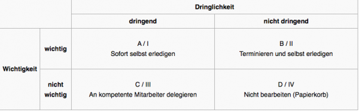

Tipps für effizientes Büromanagement
Gutes Büromanagement – weniger Druck und mehr Effizienz
Heutzutage nimmt der Leistungsdruck stetig zu, sodass sich viele Angestellte ihren Arbeitsalltag immer schwieriger bewältigen können. Besonders mittelständische Unternehmen legen immer mehr Wert auf eine eigenständige Arbeitsweise ihrer Mitarbeiter, sodass sich der Trend „Unternehmer im Unternehmen“ immer mehr durchsetzt. Insbesondere das Thema Arbeits- und Büromanagement gewinnt immer mehr an Bedeutung, da hiervon teilweise der Erfolg des Unternehmens abhängt. Es gibt einige Tricks, um den Arbeitsplatz effizienter und sinnvoller zu gestalten – diese möchten wir Ihnen heute aufzeigen…
Ordnung ist das halbe Leben
Ein aufgeräumter Arbeitsplatz und ein sinnvoll eingerichteter Schreibtisch macht den Kopf frei für wichtige Aufgaben. Angefangen beim Schreibtisch gibt es einiges zu beachten. Alle unnötigen Dinge sollten außerhalb der Sichtweite platziert werden. Alles, was für die täglichen Aufgaben nicht notwendig ist, gehört in Akten, Ordner oder in den Schrank, am besten arbeiten Sie schon vollständig digital. Der Arbeitsplatz sollte den Aufgaben entsprechend ausgerichtet sein. Jedoch braucht der Arbeitsplatz trotzdem nicht völlig karg zu sein. Es macht durchaus Sinn, kleine motivierende Dinge am Arbeitsplatz anzuschauen, nur darf dies nicht zu überladen sein, da es sonst von den wichtigen Dingen ablenkt. Das gilt übrigens auch für den Desktop und die Ordner-Struktur auf dem PC. Auch hier sind ein aufgeräumter Arbeitsplatz und eine übersichtliche Gestaltung hilfreich.
Was ist am Wichtigsten?
Der Schreibtisch ist voll mit lauter Aufgaben, die am besten gestern erledigt werden müssen. Nur zu gern schieben Angestellte wichtige Aufgaben vor sich her und verplempern ihre Zeit stattdessen mit unwichtigen, kleinen Aufgaben, anstatt sich den richtigen und wichtigen Angelegenheiten zu widmen. Insofern ist das Setzen von Prioritäten der wichtigste Tipp. Es müssen wichtige und unwichtige bzw. dringende und weniger dringende Aufgaben aufgeteilt werden. Hier lässt sich wunderbar die ABC-Analyse oder auch das Eisenhower-Prinzip anwenden um das eigene Zeitmanagement zu optimieren.

Eisenhower-Prinzip, Bild-Quelle wikipedia
Was ist das Ziel für heute oder für die kommenden Tage?
Nicht nur im Privatleben, sondern auch im Beruf ist es wichtig zu wissen, was man schaffen will. Denn wer sich keine Ziele setzt, weiß auch nicht was er oder sie schaffen will. Es ist von immenser Bedeutung sich für den Tag oder für die Woche konkrete Ziele zu setzen und einen kleinen Leitfaden für die Erreichung dieser Ziele zu erarbeiten. So vereinfacht man sich die Umsetzung. Besonders in mittelständischen Unternehmen wird die effektive Zielplanung, Prozessoptimierung und das optimale Wissensmanagement immer wichtiger für den Erfolg.
Wer schreibt, der bleibt!
Gerade an stressigen Tagen passieren manchmal viele Dinge auf einmal. So kann es unmöglich sein, alles im Kopf zu behalten. Deshalb gilt das Prinzip der Schriftlichkeit. Alle Aufgaben sollten schriftlich niedergelegt werden. So kann nichts durch die Finger rutschen. Außerdem entlastet das Notieren der Aufgaben den Kopf, weil man nicht befürchten muss, irgendetwas vergessen zu haben. Hierdurch kann dann konzentrierter an den anstehenden Aufgaben gearbeitet werden. Ein nützliches und kostenloses Werkzeug wird hierfür mit OneNote von Microsoft oder auch Evernote geliefert. So hat man seine Notizen immer und überall in digitaler Form auf PC, Notebook oder Smartphone vorliegen und diese ggf. sogar unterwegs erledigen.
„Was du heute kannst besorgen, das verschiebe nicht auf morgen…“
Jeder Angestellte hat sich schon mal dabei erwischt, sich mit Unwichtigem zu beschäftigen, und das Wichtige liegen zu lassen – weil es vielleicht anstrengend und unangenehm ist. Schiebt man die Aufgaben lange vor sich hin, belasten diese den Mitarbeiter und setzen der Konzentration zu. Jedoch erledigen sich keine Aufgaben im Büro oder Home Office von allein. Daher gibt es auch hier eine schöne Taktik für große, unangenehme Aufgaben: Diese können etwa in kleinere Teilaufgaben eingeteilt und dann Stück für Stück abgearbeitet werden. So sind die ungeliebten Angelegenheiten im Nu erledigt und man kann sich frisch an neue Herausforderungen wagen.
Das Hoch und das Tief
Sehr hilfreich ist es auch, sich an der eigenen Leistungskurve zu orientieren. Bei einigen Menschen fallen um die Mittagszeit sowohl die Leistungs-, als auch die Konzentrationsfähigkeit. Bei anderen Menschen ist hier dagegen die beste Zeit, um sich schwierigen und fordernden Aufgaben zu widmen. Jeder sollte seine eigene Leistungskurve kennen und die Aufgaben entsprechend verteilen. Wichtige Angelegenheiten mit hohem Konzentrationsbedarf sollte man selbstverständlich in die eigene Hoch-Kurve einteilen. Unwichtigere und leichte Tätigkeiten könnten dagegen im Leistungstief erledigt werden.
To-Do-Liste erstellen
Legen Sie sich eine Liste mit den zu erledigenden Aufgaben an. Markieren Sie dort wichtige und dringende Aufgaben – aber Achtung: Wichtig ist nicht immer dringend, und dringend ist nicht immer wichtig! Seien Sie bei der Vergabe der Prioritäten also ehrlich zu sich selbst, ansonsten nützt die ganze To-Do-Liste nichts. Mit einer solchen Liste kommen Sie zudem nicht in Verlegenheit Sachen zu vergessen und können so mit ruhigem Gewissen arbeiten.
Fazit Büromanagement
Abschließend ist es immer an einem selbst gelegen, wie gut der Arbeitsplatz strukturiert ist und der eigene Alltag organisiert ist oder eben nicht. Jedoch kann man mit den obigen Tipps das Büromanagement in einigen Bereichen optimieren und so im Endeffekt entspannter arbeiten.
Weitere Artikel

Puffer sichern Flow
Es wird allerhöchste Zeit, sich von der Idee, dass nur wer am Limit arbeitet, effizient sei, zu verabschieden. Unter Volllast, ganz ohne Puffer zu arbeiten ist eine „gute“ Voraussetzung für Unzuverlässigkeit, Fehler …

Die Kollaboration in einem internationalen Team organisieren
Für erfolgreiche Kollaboration im Team sind viele Bausteine nötig. Natürlich müssen alle das Ziel kennen, der Teamspirit muss stimmen, aber es muss auch die tägliche Zusammenarbeit im Team „flutschen“. Das heißt, die …